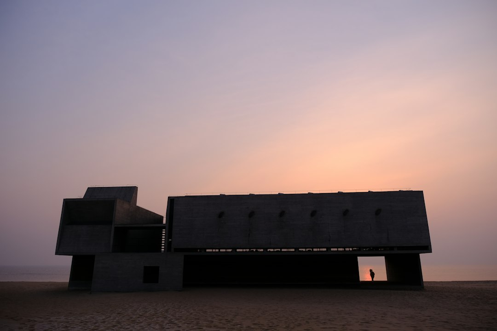

Come Ridurre Tempi e Costi nei Progetti Architettonici: Lezioni dal Rallentamento del Progetto Metinvest a Piombino

Rallentamenti nel progetto Metinvest a Piombino: come ottimizzare tempi e costi per Architetti, Interior Designer, Geometri e Ingegneri Edili
- Il progetto Metinvest a Piombino subisce ritardi fino al 2027 e riduzione di capitale, impattando la pianificazione operativa.
- I costi elevati e i tempi lunghi per varianti renderizzate esternamente rallentano l’efficienza negli studi di progettazione.
- Forma & Materia consente di produrre render 4K in 20 secondi direttamente in studio, riducendo sprechi di tempo e costi fino a 500€ per tavola.
Analisi approfondita della notizia e delle implicazioni operative
Il progetto Metinvest di rigenerazione industriale a Piombino, fino a poco tempo fa simbolo di una spinta infrastrutturale importante, ha recentemente subito un rallentamento significativo con i cantieri rinviati al 2027 e la partecipazione di un terzo socio che modifica sensibilmente la governance finanziaria. Questo slittamento temporale e la riduzione del capitale investito evidenziano una criticità sempre più frequente nei progetti di grandi dimensioni: la difficoltà di contenere costi e tempi in fase esecutiva, con impatti diretti sull’efficienza progettuale e gestionali degli studi tecnici coinvolti.
Per architetti, interior designer, geometri e ingegneri edili, queste dinamiche hanno un riscontro concreto nella gestione quotidiana di rendering, modifiche progettuali e comunicazione con il cliente. I continui ritardi e la complessità decisionale si traducono in una proliferazione di varianti al progetto, ognuna delle quali richiede rappresentazioni visive aggiornate per validazione. Tuttavia, il modello tradizionale si regge su figure esterne specializzate che applicano costi esorbitanti e tempi di attesa lunghi, rendendo difficilissimo accorciare il ciclo di progettazione e approvazione.
Le conseguenze e i costi di non agire
La situazione operativa classica presenta diverse problematiche critiche: in primis, il costo per ogni tavola renderizzata affidata a professionisti esterni si attesta mediamente intorno a 500€, una spesa che si moltiplica rapidamente con ogni variante necessaria. A ciò si aggiunge un tempo di attesa che può superare i 5 giorni per avere ogni aggiornamento visivo e difficoltà nel mostrare al cliente modifiche dinamiche in tempo reale, limitando così la capacità di decisione rapida e consapevole.
Questi costi e rallentamenti generano un effetto domino: prolungano le fasi di revisione progettuale, impoveriscono la relazione con il cliente, aumentano i rischi di errori o fraintendimenti e penalizzano la redditività degli studi. Inoltre, nei casi di grandi commesse come progetti infrastrutturali o di ampio respiro residenziale, il rischio si traduce in perdite finanziarie e in opportunità di business compromesse. Non agire significa quindi accettare una marginalizzazione competitiva in un mercato sempre più orientato all’efficienza e digitalizzazione.
Come Forma & Materia risolve il problema
Forma & Materia di RM Studio si propone come una risposta tecnologica e strategica per eliminare sprechi di tempo e costi nella gestione dei rendering, diventando uno strumento indispensabile per studi professionali nel mondo dell’architettura e progettazione.
Il suo motore neurale di rendering 4K rivoluziona il flusso di lavoro: trasforma schizzi a mano libera, planimetrie e disegni CAD in immagini fotorealistiche in soli 20 secondi. Questo consente di mantenere la piena geometria e di interpretare automaticamente note e frecce manoscritte, evitando lunghe comunicazioni scritte o telefoniche con renderisti esterni.
La possibilità di mostrare al cliente modifiche dal vivo durante una riunione o in remoto eleva la qualità della comunicazione, accelera le decisioni e riduce drasticamente il numero di variante necessarie. Dal punto di vista economico e operativo, ciò si traduce in risparmi immediati fino a 500€ per tavola e un abbattimento dei tempi di attesa da giorni a pochi secondi, che si riflettono in una produttività complessiva nettamente superiore.
| Gestione Tradizionale | Con Forma & Materia |
|---|---|
| Costo medio di 500€ per tavola renderizzata | Progetti singoli da €99, Atelier Pro da €249 con 6-20 render 4K |
| Attese di 5+ giorni per ogni variante | Render fotorealistici prodotti in 20 secondi |
| Impossibilità di mostrare modifiche dal vivo | Visualizza e modifica insieme al cliente in tempo reale |
| Comunicazioni multiple e interpretazioni errate | Interpreta note e frecce a penna direttamente dal disegno |
| Dipendenza da figure esterne e terze parti | Completamente integrato nello studio, senza outsourcing |
💡 Ti è stato utile questo approfondimento?
Condividilo con un collega o un amico del settore Architetti, Interior Designer, Geometri, Ingegneri Edili e Studi di Progettazione a cui potrebbe interessare!
FAQ
1. Quanto è facile integrare Forma & Materia nel flusso di lavoro esistente?
Forma & Materia è progettato per essere intuitivo e integrarsi con gli strumenti CAD già in uso, non richiedendo competenze tecniche avanzate, permettendo così un’adozione rapida senza necessità di formazione complessa.
2. È possibile personalizzare i rendering per differenti tipologie di progetto?
Sì, il motore neurale interpreta note e frecce scritte a mano, consentendo personalizzazioni in tempo reale per qualsiasi richiesta progettuale, preservando la geometria originale dei disegni.
3. Quali sono i vantaggi economici nell’usare Forma & Materia?
La riduzione drastica di costi esterni e tempi di produzione rende il software un investimento che ripaga rapidamente migliorando la redditività degli studi e velocizzando l’approvazione clienti.
Inizia Subito
Progetto Singolo da €99 (6 render) o Atelier Pro a €249 (20 render 4K). 1 Render di prova gratuito su https://formamateria.rmstudio.app/studio
Fonti Ufficiali e Risorse Esterne
Scopri l'Intelligenza Artificiale per la tua attività
Ottimizza i processi e aumenta le vendite con le soluzioni B2B di RM Studio.
Scopri Forma & Materia